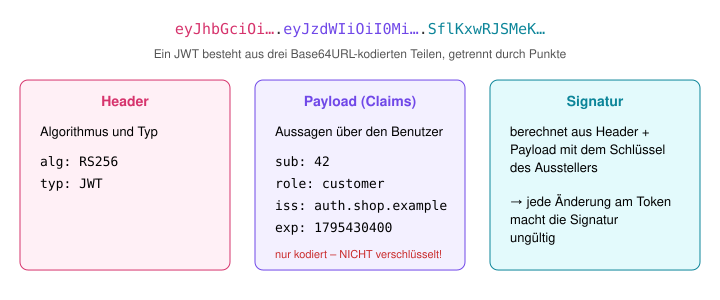

Lektion 1.4 — Teil 1: Konzepte
JWT & Token-basierte Authentifizierung
Lernziele
- Das Prinzip token-basierter Authentifizierung und den Begriff Bearer Token erklären
- Den Aufbau eines JWT (Header, Payload, Signatur) und die wichtigsten Claims beschreiben
- Begründen, warum ein JWT nicht verschlüsselt ist und welche Daten nicht hineingehören
- Die Schritte einer korrekten JWT-Validierung aufzählen
- Access Tokens und Refresh Tokens unterscheiden, Ablauf und Widerruf von Tokens erklären
- Serverseitige Sessions und JWTs vergleichen und einen geeigneten Speicherort im Browser wählen
1 — Token-basierte Authentifizierung
Statt einer Session-ID, die der Server in seinem Session-Store nachschlagen muss (Lektion 1.3), stellt der Server nach dem Login ein Token aus: eine Zeichenkette, die selbst die nötigen Informationen enthält („Benutzer 42, Rolle customer, gültig bis 14:15 Uhr“) und vom Server signiert ist. Der Server muss sich dann nichts merken – er prüft bei jeder Anfrage nur die Signatur.
Der Client schickt das Token meist im HTTP-Header Authorization mit dem Schema
Bearer mit. Bearer heißt „Inhaber“: Wer das Token besitzt, wird
akzeptiert – wie bei einer Kinokarte, auf der kein Name steht. Ein gestohlenes Bearer Token ist
deshalb genauso gefährlich wie eine gestohlene Session-ID.
Typische Einsatzgebiete:
- APIs, die von Single-Page-Apps oder Mobile-Apps aufgerufen werden
- Microservices, die die Identität des Benutzers untereinander weitergeben
- OAuth 2.0 und OpenID Connect (Lektion 2.2)
2 — Aufbau eines JSON Web Token (JWT)
Das verbreitetste Token-Format ist der JSON Web Token (JWT, ausgesprochen „jot“), standardisiert in RFC 7519. Ein JWT besteht aus drei Teilen, die jeweils Base64URL-kodiert und durch Punkte getrennt sind.

Die Angaben im Payload heißen Claims (Behauptungen). Einige sind standardisiert:
| Claim | Name | Bedeutung |
|---|---|---|
iss | Issuer | Wer hat das Token ausgestellt? |
sub | Subject | Für wen? (meist die Benutzer-ID) |
aud | Audience | Für welche Anwendung/API ist das Token bestimmt? |
exp | Expiration Time | Ablaufzeitpunkt (Sekunden seit 1.1.1970) |
nbf | Not Before | frühester Gültigkeitszeitpunkt |
iat | Issued At | Ausstellungszeitpunkt |
jti | JWT ID | eindeutige Kennung des Tokens (z. B. für Sperrlisten) |
Dazu kommen eigene Claims wie Rolle oder Name.
Base64URL ist nur eine Darstellung, keine Verschlüsselung. Jeder, der das Token sieht, kann den Payload lesen – probiere es auf jwt.io aus. Passwörter, Gesundheitsdaten oder andere Geheimnisse gehören nie in ein JWT. Die Signatur schützt nur davor, dass der Inhalt verändert wird (Integrität), nicht davor, dass er gelesen wird.
3 — Die Signatur
Die Signatur wird aus Header und Payload mit einem Schlüssel berechnet. Ändert jemand auch nur ein
Zeichen im Payload (z. B. role: customer → role: admin), passt die
Signatur nicht mehr und der Server lehnt das Token ab. Welches Verfahren verwendet wurde, steht im
Header-Feld alg:
| Verfahren | Schlüssel | Wer kann prüfen? | Einsatz |
|---|---|---|---|
| HS256 (HMAC) | ein gemeinsames Geheimnis zum Signieren und Prüfen | nur wer das Geheimnis kennt – und der könnte auch selbst Tokens ausstellen | ein einzelnes Backend stellt aus und prüft |
| RS256, ES256 | privater Schlüssel zum Signieren, öffentlicher Schlüssel zum Prüfen | jeder mit dem öffentlichen Schlüssel – ohne Tokens fälschen zu können | zentraler Identity Provider, viele APIs prüfen |
Bei RS256/ES256 veröffentlicht der Aussteller seine öffentlichen Schlüssel meist als JWKS (JSON Web Key Set) unter einer festen URL. Ein HS256-Geheimnis muss lang und zufällig sein und wird wie jedes andere Secret behandelt (Lektion 2.8).
4 — Ein JWT richtig validieren
Ein JWT nur zu dekodieren und den Inhalt zu glauben, ist einer der gefährlichsten Fehler. Bei jeder Anfrage muss der Server prüfen:
- Signatur mit dem erwarteten Schlüssel prüfen.
- Algorithmus fest vorgeben und nicht aus dem Token übernehmen.
- Ablauf:
expliegt in der Zukunft,nbf(falls vorhanden) in der Vergangenheit. - Aussteller:
issist der erwartete Identity Provider. - Empfänger:
audenthält genau diese API – ein Token für eine andere Anwendung wird abgelehnt. - Erst danach die Claims (
sub, Rolle) für die Autorisierung verwenden.
- alg: none – ein Token ohne Signatur. Ältere Bibliotheken haben es akzeptiert, wenn der Algorithmus aus dem Token übernommen wurde.
- Algorithm Confusion – ein Angreifer ändert RS256 auf HS256 und signiert mit dem öffentlichen Schlüssel als „Geheimnis“. Eine schlecht konfigurierte Bibliothek prüft dann erfolgreich.
5 — Access Tokens und Refresh Tokens
Ein Token, das lange gültig ist, ist bequem – und gefährlich, wenn es gestohlen wird. Deshalb werden zwei Arten von Tokens kombiniert:
| Access Token | Refresh Token | |
|---|---|---|
| Zweck | Zugriff auf die API | neue Access Tokens holen |
| Lebensdauer | kurz (z. B. 5–15 min) | länger (Stunden bis Wochen) |
| Wird geschickt an | jede API-Anfrage | nur an den Token-Endpunkt des Ausstellers |
| Format | oft JWT | meist eine zufällige Zeichenkette, die der Server in der Datenbank speichert |
| Widerrufbar? | schwer (siehe Abschnitt 6) | ja, durch Löschen in der Datenbank |
Läuft das Access Token ab, holt der Client mit dem Refresh Token ein neues, ohne dass sich der Benutzer erneut anmelden muss. Wird das Access Token gestohlen, ist es nur wenige Minuten nutzbar.
Bei jeder Verwendung gibt der Server ein neues Refresh Token aus und macht das alte ungültig. Taucht ein bereits verwendetes Refresh Token noch einmal auf, wurde es offensichtlich kopiert – der Server sperrt dann die ganze Token-Familie und der Benutzer muss sich neu anmelden (Reuse Detection).
6 — Token Expiration und Token Revocation
Der große Vorteil eines JWT – der Server muss nichts nachschlagen – ist zugleich sein größter
Nachteil: Ein ausgestelltes Token bleibt bis exp gültig, auch wenn sich der Benutzer
abmeldet, sein Passwort ändert oder gesperrt wird. Möglichkeiten für einen Widerruf
(Revocation):
| Strategie | Funktionsweise | Nachteil |
|---|---|---|
| Kurze Lebensdauer | Access Token läuft nach wenigen Minuten ab; widerrufen wird das Refresh Token | Zugriff bleibt bis zum Ablauf möglich |
| Sperrliste (Denylist) | Die jti widerrufener Tokens wird gespeichert und bei jeder Anfrage geprüft | wieder ein Nachschlagen pro Anfrage |
| Token-Version pro Benutzer | Ein Zähler in der Datenbank steht auch im Token; bei Passwortänderung wird er erhöht | ebenfalls Datenbankzugriff |
| Token Introspection | Die API fragt beim Aussteller nach, ob das Token noch gültig ist (Standard in OAuth 2.0) | zusätzliche Netzwerkanfrage |
7 — Wo speichert der Browser das Token?
| Speicherort | Vorteil | Risiko |
|---|---|---|
localStorage | einfach, überlebt Neuladen | jedes Skript auf der Seite kann es lesen – eine XSS-Lücke genügt für den Diebstahl |
| JavaScript-Variable (Arbeitsspeicher) | nach Neuladen weg, schwerer zu stehlen | nach Neuladen ist ein neues Token nötig; XSS kann es während der Laufzeit trotzdem verwenden |
Cookie mit HttpOnly, Secure, SameSite | für JavaScript unlesbar | wird automatisch mitgeschickt → CSRF-Schutz nötig (Lektion 2.6) |
Für Browser-Anwendungen wird heute häufig empfohlen, Tokens gar nicht im Browser zu halten: Ein kleines eigenes Backend (Backend for Frontend) erledigt den Login, bewahrt die Tokens serverseitig auf und gibt dem Browser nur ein sicheres Session-Cookie. Das verbindet die Vorteile beider Welten.
8 — Sessions oder JWT?
| Serverseitige Session | JWT | |
|---|---|---|
| Zustand | am Server | im Token |
| Widerruf | sofort (Session löschen) | aufwendig |
| Skalierung | gemeinsamer Session-Store nötig | jeder Server kann selbst prüfen |
| Einsatz über Domains/Dienste hinweg | schwierig | einfach |
| Typisch für | klassische Web-Apps mit eigenem Backend | APIs, Mobile-Apps, Microservices, OAuth/OIDC |
Für eine klassische Web-Anwendung mit einem eigenen Backend sind serverseitige Sessions meist einfacher und sicherer. JWTs spielen ihre Stärken aus, wenn mehrere Dienste dieselbe Anmeldung prüfen müssen.
Häufige Fehler
Die API liest die Rolle aus dem Payload, ohne die Signatur zu prüfen. Ein Angreifer ändert die Rolle auf „admin“ und erhält Vollzugriff.
Immer mit einer bewährten Bibliothek verifizieren: Signatur, fest vorgegebener Algorithmus, exp, iss, aud.
Ins Token werden E-Mail, Geburtsdatum und Sozialversicherungsnummer geschrieben, „weil es ja signiert ist“. Jeder, der das Token sieht, kann alles lesen.
Nur die nötigsten, nicht vertraulichen Claims aufnehmen (meist sub und Rolle). Weitere Daten bei Bedarf von der API laden.
Um Refresh Tokens zu vermeiden, ist das Access Token einen Monat gültig. Ein gestohlenes Token kann so lange missbraucht werden – und lässt sich nicht widerrufen.
Kurzlebige Access Tokens mit Refresh Tokens kombinieren, Refresh Tokens rotieren.
Aufgaben
Öffne jwt.io und lies das Beispiel-Token. Ordne jeden Teil (Header, Payload, Signatur) zu und erkläre, welche Claims du erkennst. Ändere im Payload einen Wert: Was passiert mit der Signaturprüfung?
Erstelle eine Checkliste für ein Code-Review: Welche Punkte muss eine API prüfen, bevor sie einem JWT vertraut? Begründe zu jedem Punkt, welcher Angriff ohne diese Prüfung möglich wäre.
Ein Team baut (a) eine Schulbibliotheks-Webseite mit einem Backend und (b) eine Plattform mit Web-App, iOS-App und fünf Microservices. Empfiehl jeweils serverseitige Sessions oder JWT und begründe.
Ein Benutzer klickt bei einer JWT-basierten Anwendung auf „Abmelden“. Beschreibe, was im Browser und am Server passieren muss, damit ein vorher kopiertes Access Token und Refresh Token nicht mehr verwendet werden können.
Quiz
5 Fragen · zum Aufklappen klicken
Frage 1 Welche Aussage über den Payload eines signierten JWT ist richtig?
Frage 2 Wofür steht der Claim aud?
aud (Audience) nennt den Empfänger. Prüft eine API ihn nicht, akzeptiert sie womöglich Tokens, die für eine ganz andere Anwendung ausgestellt wurden. Aussteller ist iss, Benutzer sub, Ablauf exp.Frage 3 Was muss eine API bei jedem eingehenden JWT prüfen?
Mehrere Antworten sind richtig.
Frage 4 Warum sind Access Tokens kurzlebig und werden mit Refresh Tokens kombiniert?
Frage 5 Eine Single-Page-App speichert das Access Token in localStorage. Welches Risiko entsteht dadurch vor allem?
localStorage lesen. localStorage wird nicht automatisch mitgeschickt (das tun Cookies) und bleibt auch nach dem Schließen erhalten.